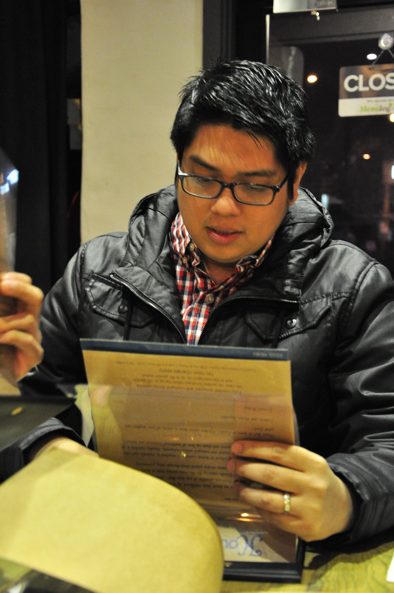

About me
My name is Ralph and im married, currently living in Adelaide, South Australia, I have a daugther name Cady, I take up BS in Telecommunications and working as a Solution Design Engineer.
I started playing video games way back in mid 90's, i do remeber playing in the shopping Center's Arcade, you need to insert a penny to play games. Childhood is a short season but worth remembering. I also played Gameboy is a Nintendo manufactured portable handheld released initially in 1989. It was the first dedicated 8-bit handheld system from the company using interchangeable cartridges to play many different titles. It featured a 2.6" 4-shade LCD, stereo sound through headphones, and interchangeable cartridges. I also played Entertainment System (NES) is an 8-bit third-generation home video game console produced, released, and marketed by Nintendo. It is a remodelled export version of the company's Family Computer[a] (FC) platform in Japan, commonly known as the Famicom. I also played Playstation and Nintendo 64 which i spend hours of playing with my fellow cousins, I do remember that i played Donkey kong country, i was not able to beat the last boss.
This a hobby of me playing games continue, when for the first time i signed up an account for an online games called MU Philippines . It is a is a 3D medieval fantasy MMORPG, produced by Webzen, a Korean gaming company. As with many MMORPGs you select a character and fight monsters to gain experience. MU is populated by a large variety of monsters, from simple ones like goblins to frightening ones such as the Gorgon or Kundun. Each monster-type is unique, has different spawn points, and drops different items. Outside of a duel, PvP fighting is possible but discouraged. When one player attacks another, a self-defense system is activated, in which the attacked player may kill the aggressor within a time limit.